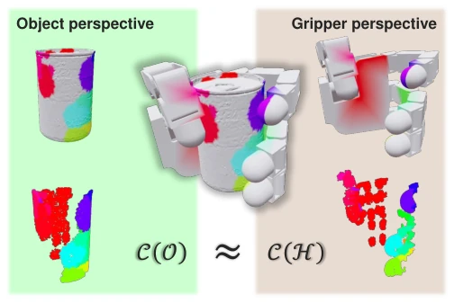
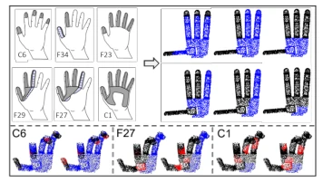
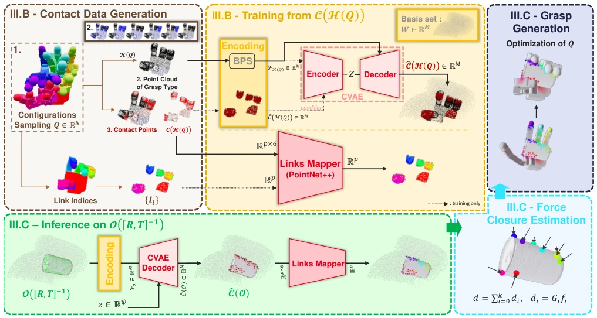
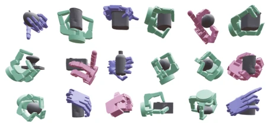

This paper pours cold water on the dexterous hand grasping community: stop obsessing over object data competition, the gripper's own "fingerprint" is the core. GOAG proposes "object-agnostic" training, learning only gripper geometry, looking at objects only during inference. This approach is indeed refreshing, saving the pain of generating millions of object-grasp pair data. But saying "completely unrelated" is an exaggeration; training still relies on grasp taxonomy [13] to draw boundaries, essentially hiding object constraints within priors. Although the measured success rate of 86.93% is quite impressive, that simplified force closure estimation (centroid model) might be a bit weak in the face of complex geometry; real-world deployment still relies on subsequent optimization as a backup. Overall, this is a smart paradigm shift, suitable for scenarios with fixed grippers and variable objects, but do not expect it to be a panacea covering all unknown shapes, after all the gripper's "fingerprint" is fixed, encountering super-large objects might still rely on sampling strategies as a backup.
Dexterous hand grasping is the deep water zone of embodied intelligence; existing data-driven methods [8], [10], [12] generally rely on massive object-grasp databases. This "overfitting" leads to poor model generalization, failing when switching to new objects, and data generation costs are extremely high (e.g., GenDexGrasp requires 1400 GPU hours [8]). Traditional methods attempt to directly learn the mapping from object to grasp, ignoring the geometric invariance of the gripper's own contact surface. GOAG aims to break this bottleneck, shifting the training focus from "what the object looks like" to "how the gripper can grasp", eliminating dependency on specific object datasets to achieve zero-shot generalization. This solves the problem of performance plummeting when traditional methods face objects of unknown shapes, providing a new path for low-cost, high-generalization dexterous manipulation, especially for scenarios where collecting real grasp data is difficult.

Fig. 1: GOAG Paradigm. A successful grasp on an object induces dual contact zones on both object and gripper, at the intersection of the two geometries. Our method is built on this key observa- tion: these contact zones (C(.)) are closely the same from either perspective. GOAG capitalizes on this by training exclusively on gripper geometry, allowing it to learn a robust and generalizable grasping strategy without ever being exposed to a grasp database with specific objects geometries.
The core is the "gripper-centric" paradigm. In the training phase, objects are completely ignored, only gripper configurations Q are sampled, valid contact regions are defined based on grasp taxonomy [13], generating contact point clouds C(H(Q)). Basis Point Set (BPS) [15] is used to encode variable-length point clouds into fixed-size distance fields, input to CVAE [14] to learn contact distribution, while PointNet++ [16] is used to train Links Mapper to map contact points to specific fingers. In the inference phase, the object point cloud is transformed to the gripper coordinate system, latent variable z is sampled, CVAE decodes to generate potential contact points, Links Mapper assigns fingers, finally obtaining the final joint configuration Q* through force closure estimation and energy function optimization (anti-penetration, self-collision). The innovation lies in shifting the contact prior from the object side to the gripper side, using BPS to solve the point cloud length inconsistency problem, and achieving generative diversity through CVAE, avoiding physical constraint issues of direct grasp pose prediction. The optimization phase also introduces four energy terms: contact distance, object penetration, self-collision, and joint limits, ensuring the generated grasp is physically feasible.

Fig. 2: Grasp Taxonomy Adaptation and Contact Sampling. (Top) We adapt the human grasp taxonomy from [13] to the Allegro Hand geometry. For each grasp type (e.g., C6, F27), we define a corresponding admissible contact region (black points), distin- guishing it from the non-contact surface (blue points). (Bottom) Data generation mechanism: We randomly sample specific contact points (red) strictly within the admissible black regions. This allows the model to learn structured, feasible contact distributions based solely on gripper kinematics, independent of any object.

Fig. 3: Overview of GOAG. Geometrical graspability is learned in an object-agnostic manner by focusing on the gripper’s capabilities. Training: We sample gripper configurations Q to generate H(Q) and corresponding contact points (C(H(Q))). To ensure transferability, we use a Basis Point Set (BPS) encoding tied to the gripper’s workspace. A Conditional Variational Autoencoder (CVAE) is trained to reconstruct these contact distributions, while a Links Mapper (PointNet++) learns to associate contact points with specific gripper links. Inference: A novel object O, positioned at the inverse gripper pose [R, T]−1, is BPS-encoded. By sampling a latent variable z ∈Rψ, the CVAE Decoder generatively predicts diverse, plausible contact points bC(O). The Links Mapper then labels which gripper link sho
Tested three grippers: Barrett, Allegro, ShadowHand on the Multidex dataset. Comparison baselines include DFC [5], GenDexGrasp [8], DRO-Grasp [10]. GOAG average success rate 86.93%, superior to GenDexGrasp (70.96%) and DRO-Grasp (72.47%), and more efficient when generating large numbers of grasps. In cross-dataset generalization tests (5 benchmarks), GOAG requires no retraining for each dataset, average success rate 53.97%, second only to DexGrasp Anything [12]. Real-robot experiments on YCB objects verified transferability. Ablation shows even without force closure estimation, performance remains strong, indicating the model learned intrinsic mechanics. Additionally, diversity metrics show the model can generate different configurations for the same object, proving the generative ability of CVAE.

Fig. 4: GOAG grasp results on Multidex [8] objects. Grasps are shown for the Barrett (green), Allegro (pink), and Shadow Hand (purple) grippers.